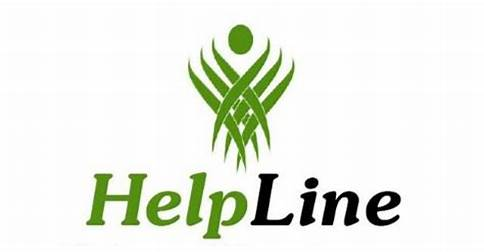

We partner with verified helplines in India
Our Helpline is the largest, most accurate helpline resource in the India. We hold relationships with helpline organisations and crisis centers in over many states, who verify their information with us directly.
Other services and websites provide long lists of out-of-date information, but we work daily to keep our information accurate and easy to use – both for the people who need immediate support and for the partners who rely on us.

You're not alone
Help is available
India Suicide Helpline Directory | AASRA
91-9820466726
Emergency number
112
 Prevention Helpline : You are not alone
Prevention Helpline : You are not alone